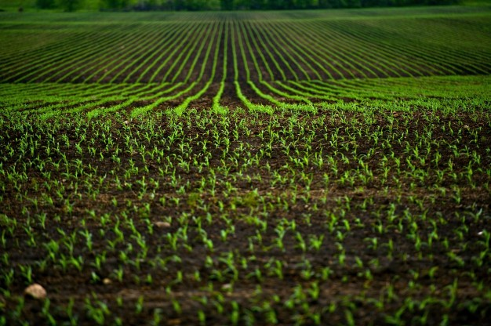

¿Por qué elegirnos?
Monitorización de cultivos en todo tipo de zonas.
Soporte técnico y garantía.

Incremento de la productividad en el sector agrario.

Compromiso con el medioambiente y cero contaminación
Grado en Tecnologías Interactivas es una empresa que se preocupa por el pequeño y gran agricultor para optimizar el mantenimiento de sus cultivos.
Se hace uso de unos avanzados sensores con la tecnología PUMPKIN con los cuales somos capaces de conocer las condiciones ambientales de las cosechas y de informar al agricultor de cualquier anomalía que pueda afectar a la producción.
Monitorización de cultivos en todo tipo de zonas.
Soporte técnico y garantía.
Incremento de la productividad en el sector agrario.
Compromiso con el medioambiente y cero contaminación
Nadie sabiendo de todo.
Por eso, queremos estar ahí para ayudarte con cada paso.